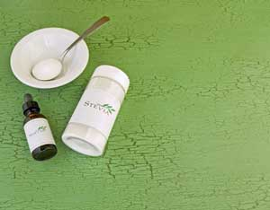

Imagine an herb that’s much sweeter than sugar, but almost calorie-free. Imagine that it does not cause the after-eating spike in blood sugar that aggravates diabetes. Imagine that it’s actually good for you, reducing blood sugar and blood pressure, and boosting immune function. Imagine that it’s safer than other artificial sweeteners, and that you can easily grow it yourself. Too good to be true? Hardly. The herb is stevia (Stevia rebaudiana), and after a long, strange trip through U.S. regulatory limbo, it is now becoming widely available, both on it’s own and in foods such as SweetLeaf Sweetener and the SoBe Lifewater beverage from PepsiCo.
An estimated 280 species of stevia grow throughout North and South America, but only one, Stevia rebaudiana, is sweet - and it is astonishingly sweet. Right off the plant, stevia leaves are 15 times sweeter than table sugar. But the commercial leaf extract is an astounding 250 times sweeter, thanks to a compound called stevioside. One teaspoon of stevioside is as sweet as 3 cups of sugar, but contains only 8 calories.
Stevia is native to Paraguay and Brazil, where, for centuries, the Guarani Indians called it kaa-he-e, meaning sweet herb, or honey leaf. Japanese food chemists introduced a powdered stevioside sweetener in 1971, but it attracted little interest in the United States until the late 1980s. Then, just as Americans began buying the herb, the Food and Drug Administration (FDA) received an anonymous complaint accusing it of causing genetic mutations linked to cancer. The charge proved to be false. A recent review of several studies shows that stevia does not pose a risk of genetic damage.
Who libeled stevia? The complainant’s name has never been released, but noted advocate of alternative medicine Andrew Weil, M.D., says, “It’s hard to avoid the conclusion that the FDA’s position was motivated, at least to some degree, by a desire to protect the manufacturer of aspartame (NutraSweet).” The three big FDA-approved artificial sweeteners are Sweet ‘N Low (saccharine), NutraSweet (aspartame) and Sunette (acesulfame K). In 1991, the FDA banned stevia as an “unsafe food additive.” Despite a chorus of protest, the ban held until 1994, when the Dietary Supplement, Health and Education Act forced the FDA to allow stevia to be sold as a supplement (you can find stevia products at health food stores). In 2008, the FDA reversed its original ruling, approving two stevia sweeteners as food additives: SweetLeaf (from Wisdom Natural Brands of Phoenix, Ariz.) and Truvia (from Cargill and Coca-Cola). Look for new stevia-sweetened soft drinks and other products in the not-too-distant future.
Makers of the other sweeteners fear stevia for good reason. It’s not only sweeter than the competition - it’s safer. Aspartame may cause headaches, dizziness and nausea. The FDA tried to ban saccharin in 1978 because it was linked to cancer in lab animals. Congress stopped the ban, but products containing saccharin were required to carry warning labels. Some studies show that Sunette causes cancer in lab animals. Meanwhile, in more than a dozen studies over the past decade, stevia has never been shown to cause any adverse effects. Look for stevia in the herb or sweetener section of natural food stores.
Finally, stevia is good for you. Many studies show that it provides health benefits:
Stevia is grown commercially in China, Israel, Thailand and Central America. China is the largest exporter. But the sweet herb can be grown in much of the United States. In the South, from Florida to Southern California, it’s a short-lived perennial that must be replaced every few years. In other parts of the United States, treat it as annual. Plant after the last frost.
Seeds are hard to obtain and often have germination problems. Buy plants instead. Local garden stores often carry it in their herb sections. You can find mail-order sources using the Mother Earth News Seed and Plant Finder. Be sure you buy S. rebaudiana, the only sweet variety. Stevia prefers loam or sandy loam, but is tolerant of any well-drained soil. If your soil can grow vegetables, it can probably support stevia. Space plants 12 inches apart. Mulch as you would a vegetable crop. Water once or twice a week. Stevia grows to 3 feet and produces leaves about 1 inch long. Sweetness peaks right before flowering in midsummer to late fall, depending on latitude. Harvest as flowering begins. Dry and powder the leaves, and use instead of sugar.
“I’ve grown stevia in my herb garden for years,” says medicinal herb expert James Duke, Ph.D., author of The Green Pharmacy. “I’d much rather use stevia as a sweetener than artificial sweeteners, or even sugar.”
STEVIA OATMEAL APPLE MUFFINS
1 cup whole wheat flour
1 cup rolled oats
1/2 tsp salt
3 tsp baking powder
1/2 tsp nutmeg
2 tsp cinnamon
1 1/2 tsp stevia powder
1 egg
3/4 cup milk
1/4 cup oil (or 1/4 cup applesauce)
1 medium apple, cored and chopped coarse
3/4 cup raisins
Preheat oven to 400 degrees Fahrenheit. Mix flour, oats, salt, baking powder, nutmeg, cinnamon and stevia powder. In a separate bowl, mix remaining ingredients. Gradually mix dry ingredients into moist. Spoon into greased muffin tins. Bake 15 to 20 minutes.
STEVIA CHOCOLATE CHIP COOKIES
1 stick butter (1/2 cup)
1/4 tsp stevia powder
1 tbsp honey (optional)
1 egg
1/2 tsp vanilla
1/2 cup unbleached wheat flour
1/2 cup whole wheat flour
1/2 tsp salt
1/2 tsp baking soda
1 cup rolled oats
1/4 cup chopped nuts
1 /4 cup chocolate chips
Soften butter. Combine butter, stevia powder, honey (optional), egg and vanilla. Gradually add the other ingredients in order. Divide into cookies. Bake 10 minutes at 375 degrees. The texture is different from conventional cookies, but eaten warm, these are delicious.
|
 FOTOLIA As a powder or a liquid, stevia can be a healthy, yummy sugar substitute, in home-baked goods or those on the store shelves. |
|
|